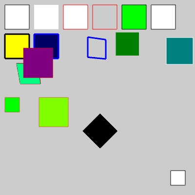

// Test by Andor Salga
import processing.opengl.*;
void setup()
{
size(400, 400, OPENGL);
noLights();
rect(10, 10, 50, 50);
noStroke();
rect(70, 10, 50, 50);
stroke(255, 0, 0);
rect(130, 10, 50, 50);
noFill();
rect(190, 10, 50, 50);
stroke(0);
fill(0, 255, 0);
rect(250, 10, 50, 50);
stroke(0);
fill(0, 255, 0);
rect(250, 10, 50, 50);
fill(255, 255, 255);
rect(310, 10, 50, 50);
strokeWeight(1);
pushMatrix();
rotateZ(PI/4);
fill(0, 0, 0);
rect(310, 20, 50, 50);
popMatrix();
fill(255,255,0);
strokeWeight(3);
rect(10, 70, 50, 50 );
noFill();
noStroke();
rect(0, 10, 50, 50);
stroke(0, 0, 255);
fill(0, 0, 100);
rect(70, 70, 50, 50);
noFill();
pushMatrix();
rotateY(PI/8.0);
rect(190, 50, 50, 50);
popMatrix();
pushMatrix();
noStroke();
scale(0.95);
fill(0, 128, 0);
rect(250, 70, 50, 50);
popMatrix();
pushMatrix();
strokeWeight(1);
stroke(255,255,255);
scale(1.1);
fill(0,128,128);
rect(310, 70, 50, 50);
popMatrix();
pushMatrix();
stroke(128, 0, 0);
fill(0,255,128);
rotateX(-PI/8.0);
rect(10, 130, 50, 50);
popMatrix();
fill(255, 255, 255);
stroke(0, 0, 0);
rect(width-50, height-50, 30,30);
fill(255, 255, 255);
stroke(250, 0, 0, 128);
fill(0, 255 ,0);
rect(10, 200, 30,30);
fill(128, 255, 0);
rect(80, 200, 60, 60);
pushMatrix();
translate(0, 0, 5);
fill(128, 0, 128);
rect(50, 100, 60, 60);
popMatrix();
}